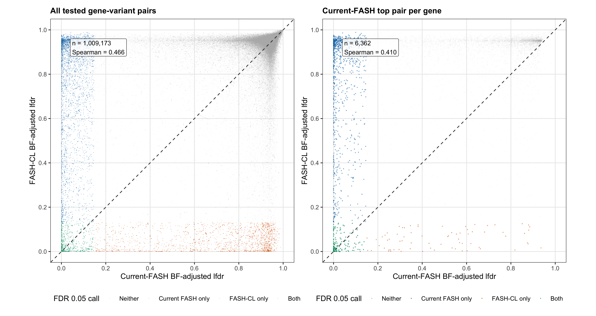
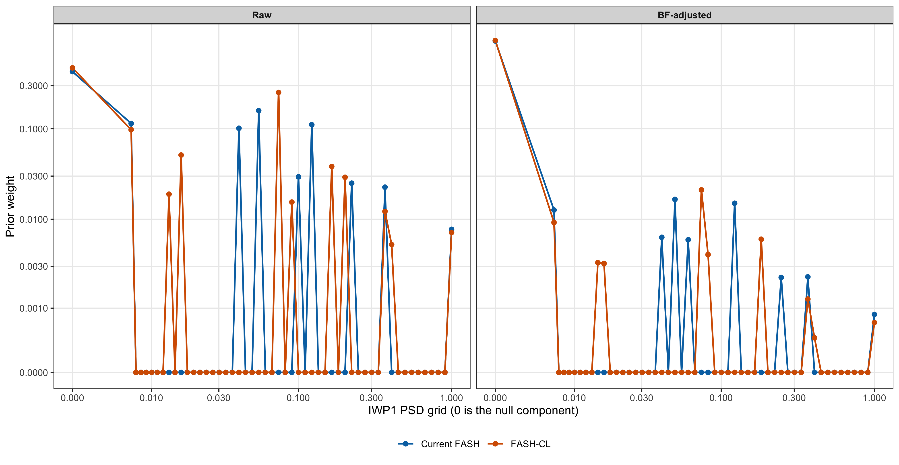
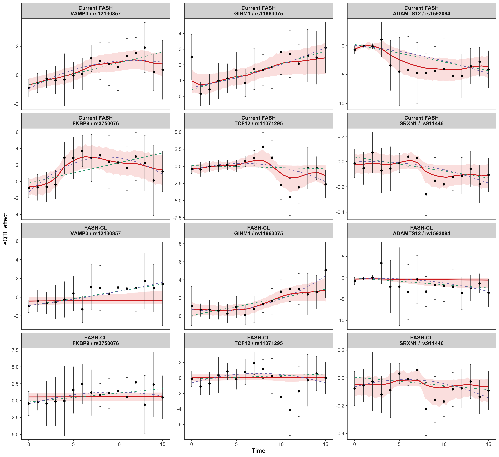
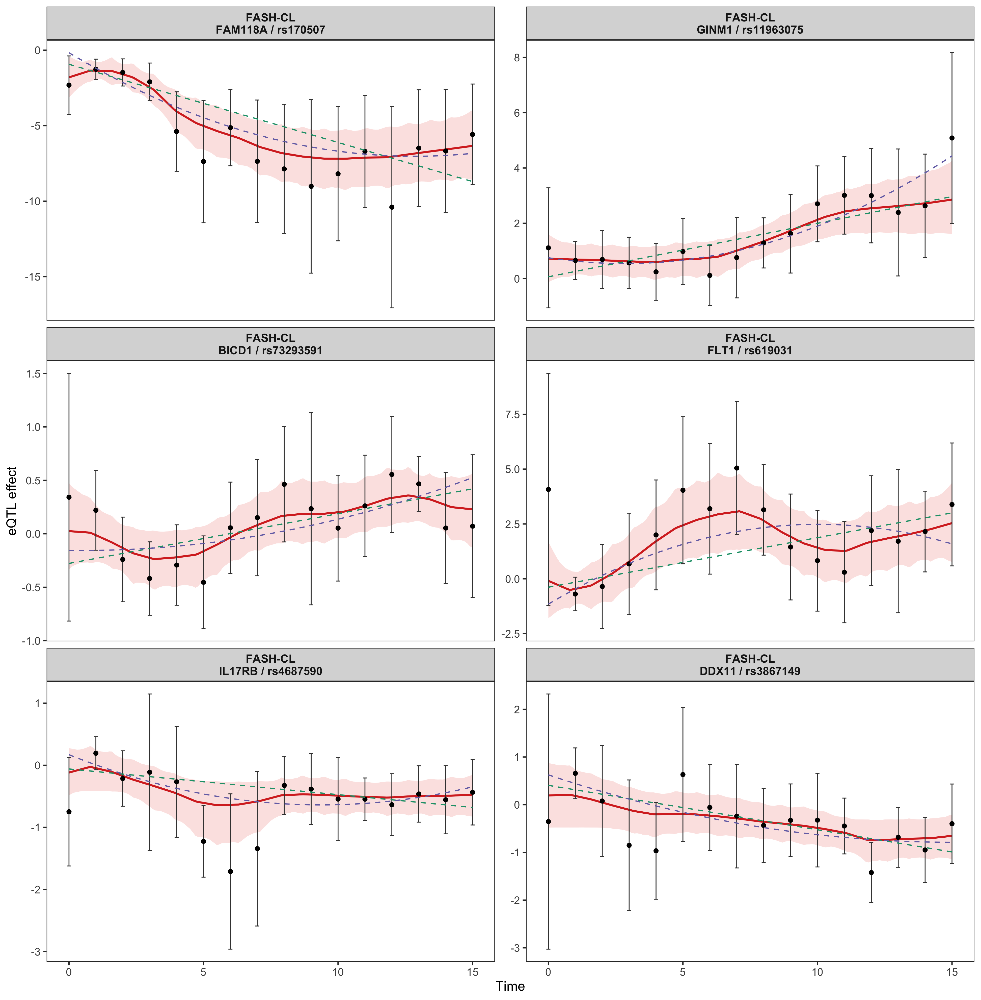
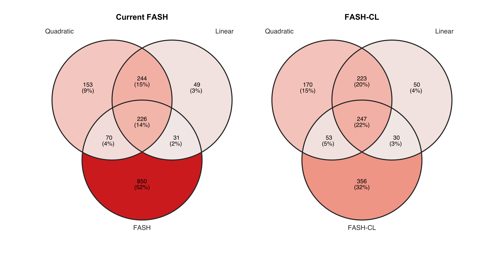
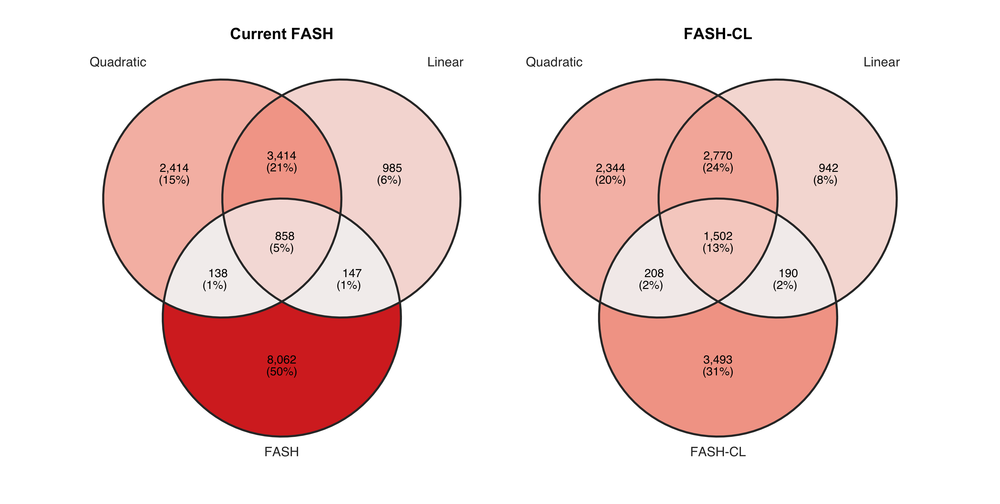
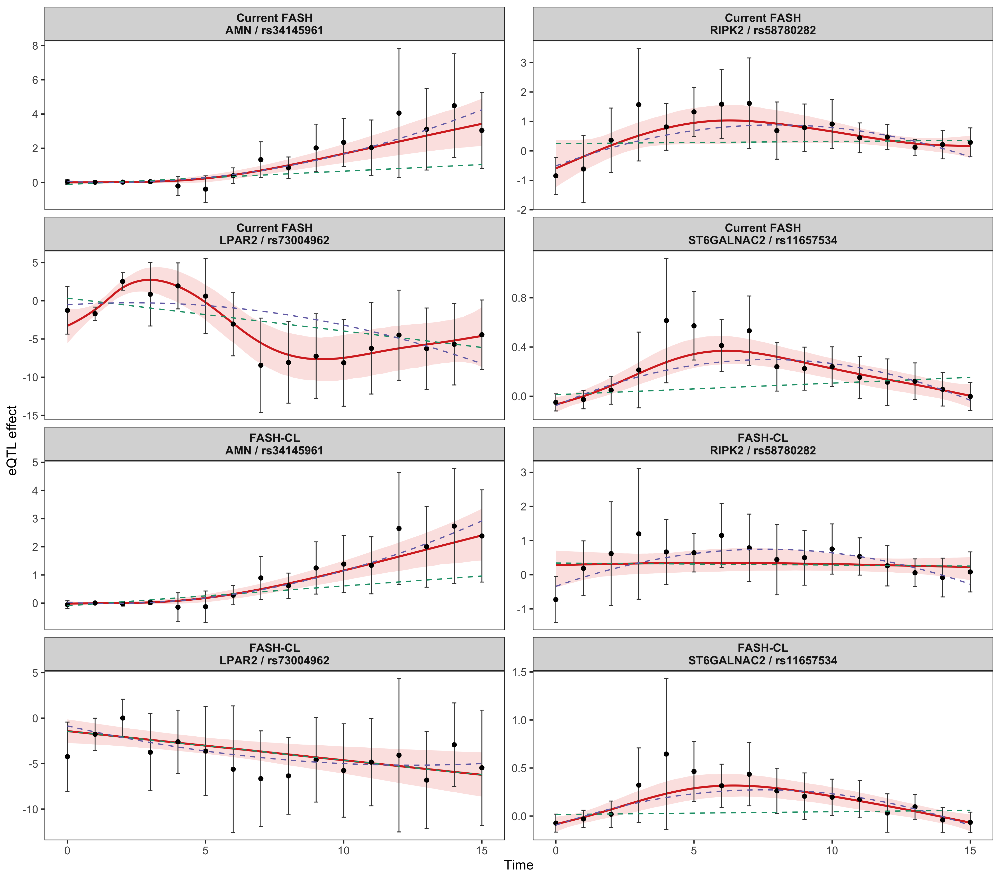
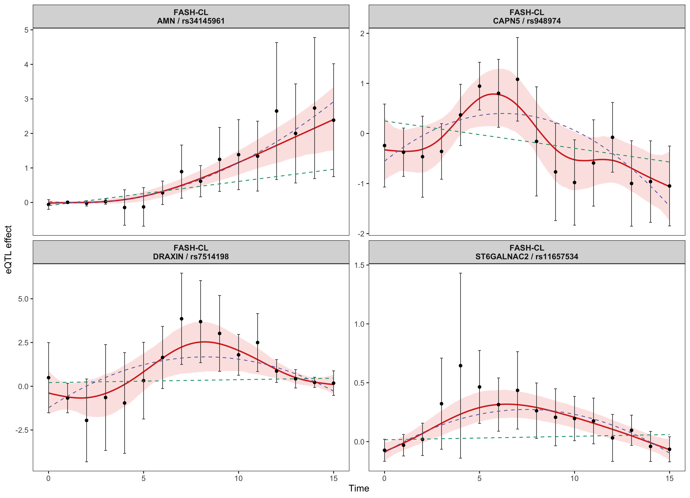
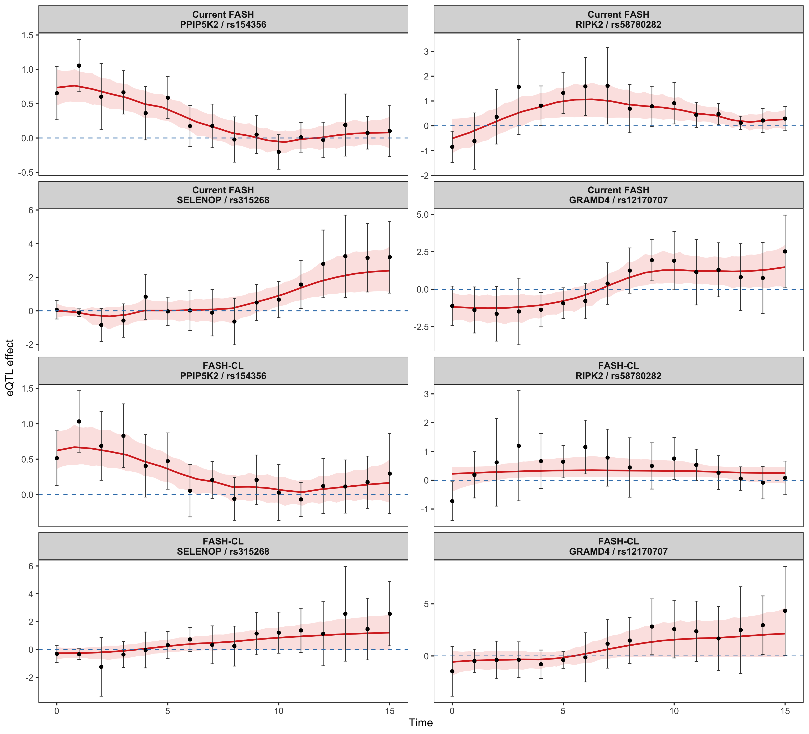
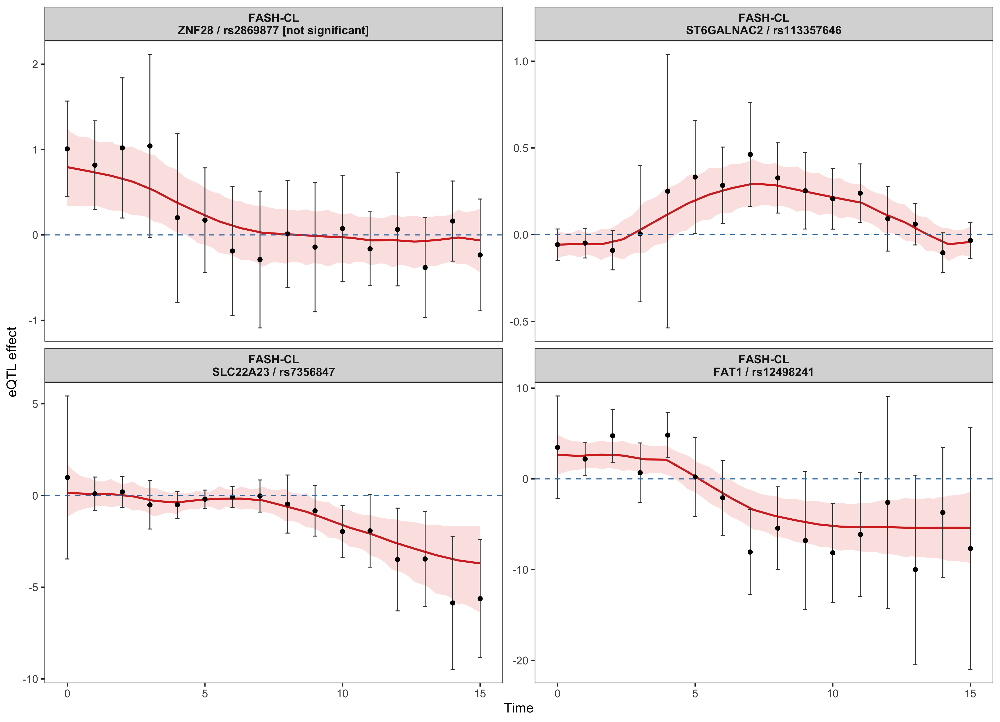

Last updated: 2026-08-10
Checks: 6 1
Knit directory: coderepo-local/
This reproducible R Markdown analysis was created with workflowr (version 1.7.2). The Checks tab describes the reproducibility checks that were applied when the results were created. The Past versions tab lists the development history.
The R Markdown is untracked by Git. To know which version of the R
Markdown file created these results, you’ll want to first commit it to
the Git repo. If you’re still working on the analysis, you can ignore
this warning. When you’re finished, you can run
wflow_publish to commit the R Markdown file and build the
HTML.
Great job! The global environment was empty. Objects defined in the global environment can affect the analysis in your R Markdown file in unknown ways. For reproduciblity it’s best to always run the code in an empty environment.
The command set.seed(20251109) was run prior to running
the code in the R Markdown file. Setting a seed ensures that any results
that rely on randomness, e.g. subsampling or permutations, are
reproducible.
Great job! Recording the operating system, R version, and package versions is critical for reproducibility.
Nice! There were no cached chunks for this analysis, so you can be confident that you successfully produced the results during this run.
Great job! Using relative paths to the files within your workflowr project makes it easier to run your code on other machines.
Great! You are using Git for version control. Tracking code development and connecting the code version to the results is critical for reproducibility.
The results in this page were generated with repository version c87957a. See the Past versions tab to see a history of the changes made to the R Markdown and HTML files.
Note that you need to be careful to ensure that all relevant files for
the analysis have been committed to Git prior to generating the results
(you can use wflow_publish or
wflow_git_commit). workflowr only checks the R Markdown
file, but you know if there are other scripts or data files that it
depends on. Below is the status of the Git repository when the results
were generated:
Ignored files:
Ignored: .DS_Store
Ignored: .Rhistory
Ignored: .Rproj.user/
Ignored: Rplots.pdf
Ignored: analysis/.DS_Store
Ignored: analysis/.Rhistory
Ignored: code/.DS_Store
Ignored: code/.Rhistory
Ignored: code/revision_simulations/.DS_Store
Ignored: data/appendixB/
Ignored: data/dynamic_eQTL_real/
Ignored: data/revision_simulations/
Ignored: data/toy_example/
Ignored: output/dynamic_eQTL_real/
Ignored: output/pdf/
Ignored: output/playwright/
Ignored: output/revision_simulations/
Untracked files:
Untracked: analysis/revision_internal_fash_cl_manuscript_impact.rmd
Untracked: code/revision_simulations/internal/covariance_estimation/run_design_propagated_null_correlation.R
Untracked: code/revision_simulations/internal/covariance_estimation/run_multigene_null_beta_covariance_exploration.R
Untracked: code/revision_simulations/internal/fash_cl_manuscript_impact/
Unstaged changes:
Modified: analysis/dynamic_eQTL_real.rmd
Modified: code/revision_simulations/internal/covariance_estimation/run_global_pca_factor_visualization.R
Note that any generated files, e.g. HTML, png, CSS, etc., are not included in this status report because it is ok for generated content to have uncommitted changes.
There are no past versions. Publish this analysis with
wflow_publish() to start tracking its development.
Switching to FASH-CL would require a substantial rewrite, not a simple number update. Dynamic discoveries fall from 9,205 to 5,393 pairs and from 1,177 to 686 genes. Only 1,583 pairs are shared. The flexible functional modeling story remains valid, but the stronger claim that FASH identifies many more dynamic pairs than the Strober parametric analyses is not supported by FASH-CL.
The sensitivity changes the regression inputs before FASH is fitted: current FASH uses PCs estimated separately at each time point, whereas FASH-CL reuses donor-level PCs at every time point. The FASH prior, BF adjustment, and thresholds are otherwise matched. Therefore, changes in discoveries cannot be attributed solely to the flexible EB-LGP model.
render_scrollable_table(
claim_impact,
align = "lll",
minimum_width = "1180px"
)| claim | status | manuscript_action |
|---|---|---|
| FASH identifies many more dynamic eQTL pairs than Strober | Not supported under FASH-CL at pair level | Rewrite the central discovery-count paragraph and Figure 4 interpretation. |
| FASH identifies many variants missed by parametric models | Weakened but still present | Replace absolute superiority language with set-specific novel-discovery counts. |
| The flexible EB-LGP model captures diverse nonlinear trajectories | Methodologically preserved; examples change | Replace lost Figure 3 and Figure 5 examples and avoid attributing all differences to model flexibility. |
| Dynamic eQTLs can be classified by posterior functionals | Preserved; counts and examples change | Update Table 1, Figure 6 examples, and category-specific text. |
| Switch genes emphasize hypoxia and KRAS-related biology | Overall hypoxia persists; switch-specific signal is not preserved | Rewrite Table 2: retain all-dynamic hypoxia, but remove the switch-specific hypoxia/KRAS emphasis. |
render_scrollable_table(
discovery_change_table,
digits = 1L,
minimum_width = "980px"
)| Test | Current pairs | FASH-CL pairs | Pair change (%) | Current genes | FASH-CL genes | Gene change (%) |
|---|---|---|---|---|---|---|
| IWP1 dynamic | 9205 | 5393 | -41.4 | 1177 | 686 | -41.7 |
| IWP2 nonlinear | 44 | 60 | 36.4 | 9 | 6 | -33.3 |
FASH estimates lfdr for gene-variant pairs, so the left panel includes all 1,009,173 tested pairs rather than deduplicated rsIDs. For the right panel, the pair with the smallest current-FASH lfdr is selected separately within each gene; variant ID and pair key provide stable tie-breakers. The same selected pair is then located in FASH-CL, as requested. Colors indicate whether the pair belongs to either method’s cumulative-lfdr FDR-0.05 discovery set.
plot_lfdr_scatter()
Global IWP1 lfdr comparison. The left panel contains every tested gene-variant pair. The right panel contains one pair per gene, selected solely by the minimum current-FASH lfdr, with the same pair evaluated under FASH-CL. Dashed lines mark equality.
The all-pair Spearman correlation is 0.466; after current-FASH top-pair selection it is 0.410.
The raw panel shows the mixture prior stored by each original IWP1 fit. The BF-adjusted panel uses the retained current-FASH prior and the matched memory-bounded BF update for FASH-CL. Both axes use pseudo-log transforms so the null component at PSD zero and components assigned exactly zero weight remain visible.
plot_iwp1_prior_weights()
IWP1 prior weights for current FASH and FASH-CL before and after BF adjustment. PSD zero is the exact-null component. Pseudo-log axes retain zero-valued components while expanding the small non-null weights.
render_scrollable_table(
prior_weight_summary[, c(
"method", "adjustment", "null_weight", "nonzero_component_count"
)],
digits = 6L,
minimum_width = "760px"
)| method | adjustment | null_weight | nonzero_component_count |
|---|---|---|---|
| Current FASH | BF-adjusted | 0.938153 | 9 |
| FASH-CL | BF-adjusted | 0.950770 | 10 |
| Current FASH | Raw | 0.428990 | 9 |
| FASH-CL | Raw | 0.472166 | 11 |
Only 1 of the six exact Figure 3 units remains a FASH-CL discovery. The table and first plot keep the original units fixed so the sensitivity is visible rather than concealed by replacement.
render_scrollable_table(
figure3_status_table,
digits = 5L,
minimum_width = "980px"
)| Panel | Unit | Role | Current lfdr | FASH-CL lfdr | FASH-CL status |
|---|---|---|---|---|---|
| A | VAMP3 / rs12130857 | Strober overlap | 0.00081 | 0.87265 | Lost |
| B | GINM1 / rs11963075 | Strober overlap | 0.03762 | 0.00529 | Retained |
| C | ADAMTS12 / rs1593084 | Strong FASH-only | 0.00001 | 0.78168 | Lost |
| D | FKBP9 / rs3750076 | Strong FASH-only | 0.00173 | 0.94164 | Lost |
| E | TCF12 / rs11071295 | Threshold-near FASH-only | 0.13145 | 0.90276 | Lost |
| F | SRXN1 / rs911446 | Threshold-near FASH-only | 0.12255 | 0.59158 | Lost |
plot_figure3_same_units()
Figure 1. The six paper Figure 3 units under current FASH and FASH-CL. Red curves and ribbons are the FASH posterior mean and 95% interval. Green and purple dashed curves are weighted linear and quadratic fits.
The replacement rule preserves the original roles rather than selecting genes for a preferred biological interpretation:
render_scrollable_table(
figure3_replacement_table,
digits = 5L,
minimum_width = "1100px"
)| Panel | Unit | Role | lfdr | Linear p | Quadratic p |
|---|---|---|---|---|---|
| A | FAM118A / rs170507 | Strober overlap replacement | 0.00000 | 0.00000 | 0.00000 |
| B | GINM1 / rs11963075 | Strober overlap retained from paper | 0.00529 | 0.00007 | 0.00000 |
| C | BICD1 / rs73293591 | Strong FASH-CL-only replacement | 0.01631 | 0.28480 | 0.48288 |
| D | FLT1 / rs619031 | Strong FASH-CL-only replacement | 0.00443 | 0.75077 | 0.89700 |
| E | IL17RB / rs4687590 | Threshold-near FASH-CL-only replacement | 0.10232 | 0.77955 | 0.28319 |
| F | DDX11 / rs3867149 | Threshold-near FASH-CL-only replacement | 0.10700 | 0.23632 | 0.40586 |
plot_figure3_proposed()
Figure 2. Deterministically selected FASH-CL replacements for paper Figure 3. Replacement examples demonstrate model flexibility, but they do not restore the original discovery-count claim.
Replacing examples can preserve the visual demonstration that an EB-LGP model captures shapes missed by linear or quadratic curves. It cannot support the original causal wording that model flexibility explains the larger discovery count, because the discovery advantage disappears under the CL PC design.
FASH-only pairs decline from 8,062 to 3,493. FASH-CL is more concordant with the Strober sets, but its total pair count is comparable to, rather than much larger than, the linear and quadratic analyses.
The following panels preserve the paper’s three-set Venn representation. Each row compares the original current-FASH diagram with the corresponding FASH-CL diagram. In addition to the paper’s gene-level and gene-variant-pair views, a variant-level view is shown so repeated variants assigned to different genes can be distinguished from genuinely distinct discovered variants.
render_scrollable_table(
method_overlap,
digits = 4L,
minimum_width = "820px"
)| unit | current_count | cl_count | intersection | union | jaccard |
|---|---|---|---|---|---|
| Gene-variant pairs | 9205 | 5393 | 1583 | 13015 | 0.1216 |
| Genes | 1177 | 686 | 399 | 1464 | 0.2725 |
| Variants | 9139 | 5361 | 1593 | 12907 | 0.1234 |
plot_venn_diagram_comparison("Genes")
Paper Figure 4 sensitivity at the gene level. Current FASH is shown on the left and FASH-CL on the right.
plot_venn_diagram_comparison("Gene-variant pairs")
Paper Figure 4 sensitivity at the gene-variant-pair level. Current FASH is shown on the left and FASH-CL on the right.
plot_venn_diagram_comparison("Variants")Additional paper Figure 4 sensitivity at the unique-variant level. Current FASH is shown on the left and FASH-CL on the right.
render_scrollable_table(
venn_regions[, c("method", "unit", "region", "count")],
minimum_width = "980px"
)| method | unit | region | count |
|---|---|---|---|
| Current FASH | Genes | Strober quadratic | 153 |
| Current FASH | Genes | Strober linear | 49 |
| Current FASH | Genes | FASH | 850 |
| Current FASH | Genes | Strober quadratic + Strober linear | 244 |
| Current FASH | Genes | Strober quadratic + FASH | 70 |
| Current FASH | Genes | Strober linear + FASH | 31 |
| Current FASH | Genes | Strober quadratic + Strober linear + FASH | 226 |
| Current FASH | Gene-variant pairs | Strober quadratic | 2414 |
| Current FASH | Gene-variant pairs | Strober linear | 985 |
| Current FASH | Gene-variant pairs | FASH | 8062 |
| Current FASH | Gene-variant pairs | Strober quadratic + Strober linear | 3414 |
| Current FASH | Gene-variant pairs | Strober quadratic + FASH | 138 |
| Current FASH | Gene-variant pairs | Strober linear + FASH | 147 |
| Current FASH | Gene-variant pairs | Strober quadratic + Strober linear + FASH | 858 |
| Current FASH | Variants | Strober quadratic | 2396 |
| Current FASH | Variants | Strober linear | 982 |
| Current FASH | Variants | FASH | 7972 |
| Current FASH | Variants | Strober quadratic + Strober linear | 3382 |
| Current FASH | Variants | Strober quadratic + FASH | 144 |
| Current FASH | Variants | Strober linear + FASH | 148 |
| Current FASH | Variants | Strober quadratic + Strober linear + FASH | 875 |
| FASH-CL | Genes | Strober quadratic | 170 |
| FASH-CL | Genes | Strober linear | 50 |
| FASH-CL | Genes | FASH | 356 |
| FASH-CL | Genes | Strober quadratic + Strober linear | 223 |
| FASH-CL | Genes | Strober quadratic + FASH | 53 |
| FASH-CL | Genes | Strober linear + FASH | 30 |
| FASH-CL | Genes | Strober quadratic + Strober linear + FASH | 247 |
| FASH-CL | Gene-variant pairs | Strober quadratic | 2344 |
| FASH-CL | Gene-variant pairs | Strober linear | 942 |
| FASH-CL | Gene-variant pairs | FASH | 3493 |
| FASH-CL | Gene-variant pairs | Strober quadratic + Strober linear | 2770 |
| FASH-CL | Gene-variant pairs | Strober quadratic + FASH | 208 |
| FASH-CL | Gene-variant pairs | Strober linear + FASH | 190 |
| FASH-CL | Gene-variant pairs | Strober quadratic + Strober linear + FASH | 1502 |
| FASH-CL | Variants | Strober quadratic | 2331 |
| FASH-CL | Variants | Strober linear | 929 |
| FASH-CL | Variants | FASH | 3455 |
| FASH-CL | Variants | Strober quadratic + Strober linear | 2761 |
| FASH-CL | Variants | Strober quadratic + FASH | 209 |
| FASH-CL | Variants | Strober linear + FASH | 201 |
| FASH-CL | Variants | Strober quadratic + Strober linear + FASH | 1496 |
Only 2 of the four exact nonlinear examples remains significant under FASH-CL. The IWP2 result itself does not disappear: FASH-CL finds 60 pairs in 6 genes, compared with 44 pairs in 9 genes under current FASH. The identities of the genes, however, change sharply.
render_scrollable_table(
figure5_status_table,
digits = 5L,
minimum_width = "820px"
)| Panel | Unit | Current lfdr | FASH-CL lfdr | FASH-CL status |
|---|---|---|---|---|
| A | AMN / rs34145961 | 0.00401 | 0.01248 | Retained |
| B | RIPK2 / rs58780282 | 0.09212 | 0.89028 | Lost |
| C | LPAR2 / rs73004962 | 0.00285 | 0.99909 | Lost |
| D | ST6GALNAC2 / rs11657534 | 0.00000 | 0.00006 | Retained |
plot_figure5_same_units()
Figure 4. The four paper Figure 5 units under current FASH and FASH-CL IWP2 fits.
The proposed FASH-CL version retains surviving paper units and fills the remaining panels with the lowest-lfdr discoveries from distinct new genes.
render_scrollable_table(
figure5_replacement_table,
digits = 6L,
minimum_width = "760px"
)| Panel | Unit | Status | lfdr |
|---|---|---|---|
| A | AMN / rs34145961 | Retained paper unit | 0.012478 |
| B | CAPN5 / rs948974 | FASH-CL nonlinear replacement | 0.018069 |
| C | DRAXIN / rs7514198 | FASH-CL nonlinear replacement | 0.020618 |
| D | ST6GALNAC2 / rs11657534 | Retained paper unit | 0.000064 |
plot_figure5_proposed()
Figure 5. Proposed FASH-CL nonlinear examples selected by a deterministic lowest-lfdr, distinct-gene rule.
The CL classifications below were recomputed from the BF-adjusted FASH-CL posterior. Each of the 5,393 dynamic units was sampled once with 3,000 posterior trajectories; the same draws were used for all four functionals before cumulative FSR control at 0.05.
smooth_var <- seq(0, 15, by = 0.1)
posterior_sample_size <- 3000L
switch_threshold <- 0.25
classification_seed <- 20260810L
classification_alpha <- 0.05render_scrollable_table(
category_change_table,
digits = 1L,
minimum_width = "1080px"
)| category | current_pair_count | current_gene_count | cl_pair_count | cl_gene_count | pair_change | gene_change |
|---|---|---|---|---|---|---|
| nonlinear | 44 | 9 | 60 | 6 | 36.4 | -33.3 |
| early | 124 | 8 | 0 | 0 | -100.0 | -100.0 |
| middle | 24 | 5 | 66 | 9 | 175.0 | 80.0 |
| late | 20 | 12 | 21 | 6 | 5.0 | -50.0 |
| switch | 984 | 250 | 594 | 150 | -39.6 | -40.0 |
Because categories are not mutually exclusive, these changes should be read category by category rather than summed. The early category disappears at the paper threshold, middle increases, and switch falls from 984 pairs/250 genes to 594 pairs/150 genes. These membership changes directly affect Figure 6 and Table 2.
Figure 6 is not in the minimal list in the question, but it is included here because it is the visual support for Table 1. Only 0 of its four exact units remains significant in the same FASH-CL category.
render_scrollable_table(
figure6_status_table,
digits = 5L,
minimum_width = "1120px"
)| Panel | Category | Unit | Current lfsr | FASH-CL lfsr | FASH-CL category status |
|---|---|---|---|---|---|
| A | early | PPIP5K2 / rs154356 | 0.03233 | 0.085 | Lost |
| B | middle | RIPK2 / rs58780282 | 0.06700 | NA | Lost |
| C | late | SELENOP / rs315268 | 0.03533 | 0.295 | Lost |
| D | switch | GRAMD4 / rs12170707 | 0.00000 | 0.164 | Lost |
plot_figure6_same_units()
Figure 6. The four paper category examples under current FASH and FASH-CL IWP1 fits. The blue dashed line marks zero.
For a proposed CL version, an original unit is retained only if it remains significant in the same category. Otherwise, the lowest-lfsr significant unit from a distinct gene is used. If a category has no FASH-CL discoveries at FSR 0.05, the closest nonsignificant unit is displayed only as a diagnostic and is explicitly not treated as a valid replacement.
render_scrollable_table(
figure6_replacement_table,
digits = 5L,
minimum_width = "980px"
)| Panel | Category | Unit | Status | lfsr | cFSR | Significant at FSR 0.05 |
|---|---|---|---|---|---|---|
| A | early | ZNF28 / rs2869877 | No significant FASH-CL unit; closest nonsignificant candidate | 0.05033 | 0.05033 | FALSE |
| B | middle | ST6GALNAC2 / rs113357646 | Same-category FASH-CL replacement | 0.00333 | 0.00333 | TRUE |
| C | late | SLC22A23 / rs7356847 | Same-category FASH-CL replacement | 0.03233 | 0.03233 | TRUE |
| D | switch | FAT1 / rs12498241 | Same-category FASH-CL replacement | 0.00000 | 0.00000 | TRUE |
plot_figure6_proposed()
Figure 7. Proposed FASH-CL category panels selected by the same-category lowest-lfsr rule. A category with no FSR-0.05 discovery shows its closest nonsignificant unit and cannot retain a significant-example panel.
The first table reproduces the values currently printed in the
manuscript. The second recomputes both methods using the same installed
Hallmark annotation (msigdbr 25.1.1) and the same
tested-gene universe. This separates PC sensitivity from
annotation-version drift.
render_scrollable_table(
manuscript_hallmark_display,
digits = 5L,
minimum_width = "940px"
)| Method | Gene set | Hallmark | Overlap | Selected genes | p-value | BH q-value |
|---|---|---|---|---|---|---|
| Current FASH manuscript | All dynamic | Hypoxia | 25 | 1177 | 0.01700 | 0.436 |
| Current FASH manuscript | All dynamic | KRAS signaling up | 11 | 1177 | 0.24000 | 0.840 |
| Current FASH manuscript | Switch | Hypoxia | 11 | 250 | 0.00067 | 0.025 |
| Current FASH manuscript | Switch | KRAS signaling up | 7 | 250 | 0.00220 | 0.035 |
render_scrollable_table(
hallmark_display,
digits = 6L,
minimum_width = "1060px"
)| Method | Gene set | Hallmark | Overlap | Selected genes | p-value | BH q-value |
|---|---|---|---|---|---|---|
| Current FASH | All dynamic | Hypoxia | 25 | 1177 | 0.016925 | 0.470337 |
| Current FASH | All dynamic | KRAS signaling up | 11 | 1177 | 0.241531 | 0.906562 |
| Current FASH | Switch | Hypoxia | 11 | 250 | 0.000668 | 0.033391 |
| Current FASH | Switch | KRAS signaling up | 7 | 250 | 0.002177 | 0.047261 |
| FASH-CL | All dynamic | Hypoxia | 21 | 686 | 0.000383 | 0.019131 |
| FASH-CL | All dynamic | KRAS signaling up | 9 | 686 | 0.060625 | 0.348355 |
| FASH-CL | Switch | Hypoxia | 7 | 150 | 0.004826 | 0.073619 |
| FASH-CL | Switch | KRAS signaling up | 2 | 150 | 0.304525 | 0.585625 |
The matched-version result separates two biological conclusions. Among all dynamic genes, Hypoxia strengthens from q = 0.470 to 0.019. Among switch genes, however, Hypoxia weakens from q = 0.033 to 0.074, and KRAS signaling weakens from q = 0.047 to 0.586. Thus the general Hypoxia signal is preserved, but the manuscript’s switch-specific Hypoxia/KRAS story is not.
The safest FASH-CL framing would be: the model finds a partly distinct set of dynamic and nonlinear eQTLs, including thousands not called by the parametric analyses, while providing flexible posterior estimation and functional classification. It should not say that FASH-CL finds many more pairs than both parametric approaches.
Routine builds of this page read analysis_cache.rds;
they do not rerun posterior sampling. The retained classification used
fixed per-unit seeds and checkpointed every 64 units.
Sys.setenv(FASH_CL_CLASSIFICATION_CORES = 16)
source(file.path(
"code",
"revision_simulations",
"internal",
"fash_cl_manuscript_impact",
"run_fash_cl_manuscript_impact.R"
))
workflowr::wflow_build(
"analysis/revision_internal_fash_cl_manuscript_impact.rmd",
local = TRUE
)render_scrollable_table(
runtime_summary,
digits = 1L,
minimum_width = "760px"
)| stage | elapsed_seconds |
|---|---|
| Total retained analysis | 114.9 |
| FASH-CL IWP1 BF adjustment reused | 32.2 |
| FASH-CL IWP2 BF adjustment | 31.0 |
render_scrollable_table(
input_provenance,
minimum_width = "1420px"
)| path | byte_size | md5 | modified_at |
|---|---|---|---|
| /Users/ziangzhang/Desktop/FASH/fash-revision/coderepo-local/output/dynamic_eQTL_real/fash_fit1_all.RData | 576110361 | e8aa07c1ebbd600b5dd192e5e91cb794 | 2026-01-20 17:57:38 UTC |
| /Users/ziangzhang/Desktop/FASH/fash-revision/coderepo-local/output/dynamic_eQTL_real/fash_fit1_update.RData | 581122554 | af46b39a04b241cf1e6116a645dbcc3e | 2026-01-20 20:29:11 UTC |
| /Users/ziangzhang/Desktop/FASH/fash-revision/coderepo-local/output/dynamic_eQTL_real/fash_fit2_update.RData | 568718341 | 5f29fc87e2c1dfeaf77d7b552b8865ec | 2026-01-20 22:31:43 UTC |
| /Users/ziangzhang/Desktop/FASH/fash-revision/coderepo-local/output/dynamic_eQTL_real/fash_fit1_all_CL.RData | 597415015 | 57383f6068304370930f2410021808cb | 2026-02-08 06:31:30 UTC |
| /Users/ziangzhang/Desktop/FASH/fash-revision/coderepo-local/output/dynamic_eQTL_real/fash_fit2_all_CL.RData | 574585330 | 550fd3d6bb5cf7a5a6d80288da7974a2 | 2026-02-08 06:31:12 UTC |
| /Users/ziangzhang/Desktop/FASH/fash-revision/coderepo-local/output/revision_simulations/internal/fash_cl_variant_enrichment_comparison/fash_cl_bf_adjustment.rds | 10448945 | b73d4ff81190602c405bf1d803c76260 | 2026-08-08 05:46:10 UTC |
| /Users/ziangzhang/Desktop/FASH/fash-revision/coderepo-local/output/dynamic_eQTL_real/cache_gene_map.rds | 50218 | 3b869a545b734496af235decaa6648e6 | 2026-01-20 21:18:50 UTC |
| /Users/ziangzhang/Desktop/FASH/fash-revision/coderepo-local/data/dynamic_eQTL_real/strober_linear/linear_dynamic_eqtls_5_pc.txt | 63118432 | 0046a033a3c6e2e6096c3551702353da | 2019-03-12 17:12:30 UTC |
| /Users/ziangzhang/Desktop/FASH/fash-revision/coderepo-local/data/dynamic_eQTL_real/strober_nonlinear/non_linear_dynamic_eqtls_5_pc.txt | 63148959 | dd38af583983ab6a670ac1ffa773bdee | 2019-03-12 17:12:38 UTC |
| /Users/ziangzhang/Desktop/FASH/fash-revision/coderepo-local/output/dynamic_eQTL_real/classify_dyn_eQTLs_early.RData | 169224 | ed93a60a1c826d5308ac6e7d6e42e2bc | 2026-01-21 00:20:57 UTC |
| /Users/ziangzhang/Desktop/FASH/fash-revision/coderepo-local/output/dynamic_eQTL_real/classify_dyn_eQTLs_middle.RData | 175279 | 2aa6c272404a30975bed1ffda821e43b | 2026-01-21 00:20:57 UTC |
| /Users/ziangzhang/Desktop/FASH/fash-revision/coderepo-local/output/dynamic_eQTL_real/classify_dyn_eQTLs_late.RData | 178502 | 61d6a23423b6b58ae9252b2f2985b421 | 2026-01-21 00:20:57 UTC |
| /Users/ziangzhang/Desktop/FASH/fash-revision/coderepo-local/output/dynamic_eQTL_real/classify_dyn_eQTLs_switch.RData | 178354 | 055ca177f8e2cc72065fd12c393b00de | 2026-01-21 00:20:57 UTC |
| /Users/ziangzhang/Desktop/FASH/fash-revision/coderepo-local/code/revision_simulations/internal/fash_cl_variant_enrichment_comparison/fash_cl_variant_enrichment_helpers.R | 10109 | d588cd5e5008b1f310fdd9222c9fd302 | 2026-08-08 05:34:50 UTC |
| /Users/ziangzhang/Desktop/FASH/fash-revision/coderepo-local/code/revision_simulations/internal/fash_cl_manuscript_impact/fash_cl_manuscript_impact_helpers.R | 15271 | 0ac6fb526da3828dd4cbfa973e7b8ba8 | 2026-08-10 19:59:22 UTC |
| /Users/ziangzhang/Desktop/FASH/fash-revision/coderepo-local/code/revision_simulations/internal/fash_cl_manuscript_impact/run_fash_cl_manuscript_impact.R | 48016 | 869d883e6b0244fe358447fa2826b8d8 | 2026-08-10 20:00:22 UTC |
sessionInfo()R version 4.5.1 (2025-06-13)
Platform: aarch64-apple-darwin20
Running under: macOS Sequoia 15.6.1
Matrix products: default
BLAS: /System/Library/Frameworks/Accelerate.framework/Versions/A/Frameworks/vecLib.framework/Versions/A/libBLAS.dylib
LAPACK: /Library/Frameworks/R.framework/Versions/4.5-arm64/Resources/lib/libRlapack.dylib; LAPACK version 3.12.1
locale:
[1] C.UTF-8/C.UTF-8/C.UTF-8/C/C.UTF-8/C.UTF-8
time zone: America/Chicago
tzcode source: internal
attached base packages:
[1] stats graphics grDevices utils datasets methods base
loaded via a namespace (and not attached):
[1] sass_0.4.10 generics_0.1.4 stringi_1.8.7
[4] digest_0.6.39 magrittr_2.0.5 evaluate_1.0.5
[7] grid_4.5.1 RColorBrewer_1.1-3 fastmap_1.2.0
[10] rprojroot_2.1.1 workflowr_1.7.2 jsonlite_2.0.0
[13] ggrastr_1.0.2 promises_1.5.0 scales_1.4.0
[16] jquerylib_0.1.4 cli_3.6.6 rlang_1.2.0
[19] withr_3.0.2 cachem_1.1.0 yaml_2.3.12
[22] otel_0.2.0 ggbeeswarm_0.7.3 tools_4.5.1
[25] dplyr_1.1.4 ggplot2_4.0.1 httpuv_1.6.16
[28] vctrs_0.7.3 R6_2.6.1 lifecycle_1.0.5
[31] git2r_0.36.2 stringr_1.6.0 fs_1.6.6
[34] vipor_0.4.7 pkgconfig_2.0.3 beeswarm_0.4.0
[37] pillar_1.11.1 bslib_0.9.0 later_1.4.4
[40] gtable_0.3.6 glue_1.8.1 Rcpp_1.1.1-1.1
[43] xfun_0.55 tibble_3.3.0 tidyselect_1.2.1
[46] rstudioapi_0.17.1 knitr_1.50 dichromat_2.0-0.1
[49] farver_2.1.2 htmltools_0.5.9 patchwork_1.3.2
[52] rmarkdown_2.30 labeling_0.4.3 ggVennDiagram_1.5.4
[55] Cairo_1.7-0 compiler_4.5.1 S7_0.2.1